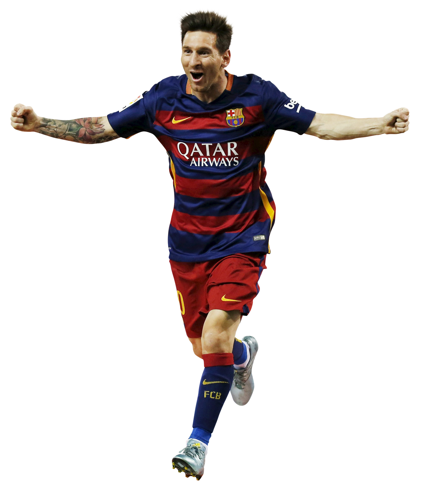
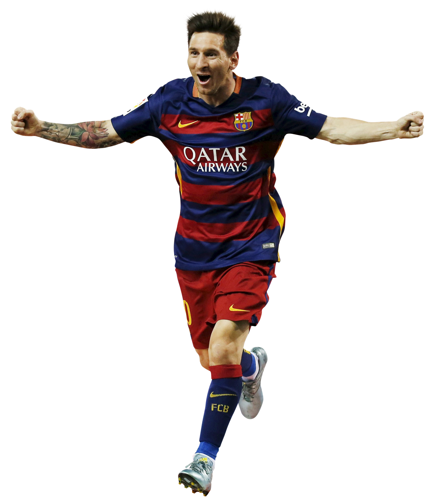

World's Best
Soccer Clubs
Experience the world's best soccer clubs,
legendary players,
and epic showdowns!

Real Madrid
Real Madrid is one of the most successful soccer clubs in the world, with a rich history dating back to 1902. Over the years, they have won numerous domestic and international titles, including 13 UEFA Champions League titles. Real Madrid has had some of the most iconic players in soccer history, including Cristiano Ronaldo, Zinedine Zidane, and Alfredo Di Stefano. The club's fierce rivalry with Barcelona, known as El Clasico, is one of the most intense in all of sports. Real Madrid's attacking style of play and dominance in the sport have made them a fan favorite worldwide.

Barcelona
Barcelona, one of the most popular soccer clubs in the world, was founded in 1899. The club has a rich history and has won numerous domestic and international titles, including 5 UEFA Champions League titles. Barcelona is known for their signature style of play, tiki-taka, which emphasizes possession and quick passing. Some of the most iconic players in soccer history have played for Barcelona, including Lionel Messi, Ronaldinho, and Johan Cruyff. Barcelona's fierce rivalry with Real Madrid, known as El Clasico, is one of the most intense in the sport. The club's success and passion for the game have made them a fan favorite worldwide.

Liverpool
Liverpool Football Club, founded in 1892, is one of the most successful soccer clubs in England. The club has won numerous domestic and international titles, including 6 UEFA Champions League titles. Liverpool is known for their high-energy and attacking style of play, with some of the most iconic players in soccer history, such as Steven Gerrard, Kenny Dalglish, and Ian Rush. The club's passionate fan base, known as the "Kop," is one of the most dedicated in all of sports. Liverpool's rivalry with Manchester United is one of the most fiercely contested in the sport. The club's commitment to excellence and tradition has earned them a place as one of the world's top soccer teams.
Manchester United
Manchester United Football Club, founded in 1878, is one of the most successful soccer clubs in English history, with numerous domestic and international titles, including 3 UEFA Champions League wins. Some of the most iconic players in soccer history have played for Manchester United, including George Best, Eric Cantona, and Cristiano Ronaldo. The club's intense rivalry with Liverpool is one of the most hotly contested in the sport, with a loyal fan base known as the "Red Army". Manchester United's commitment to excellence and winning has made them one of the most popular and successful soccer teams worldwide.

Juventus
Juventus Football Club, founded in 1897, is one of the most successful soccer clubs in Italian history, with numerous domestic and international titles, including 2 UEFA Champions League wins. The club is known for its attacking style of play, with some of the most iconic players in soccer history, such as Michel Platini, Alessandro Del Piero, and Cristiano Ronaldo. Juventus' rivalry with AC Milan is one of the most intense in the sport. The club's passionate fan base, known as the "Bianconeri," is one of the largest and most dedicated in Italy. Juventus' commitment to excellence and tradition has made them one of the most respected and successful soccer teams in the world.

Bayern Munchen
Bayern Munich Football Club, founded in 1900, is one of the most successful soccer clubs in German history, with numerous domestic and international titles, including 6 UEFA Champions League wins. The club is known for its attacking and dominating style of play, with some of the most iconic players in soccer history, such as Franz Beckenbauer, Gerd Muller, and Franz Roth. Bayern Munich's intense rivalry with Borussia Dortmund is one of the most heated in German soccer. The club's passionate fan base, known as the "FC Hollywood" or "Die Roten," is one of the largest and most dedicated in the world. Bayern Munich's commitment to excellence and their dominant play has made them one of the most successful and well-respected soccer teams in the world.

Corner Kick
Just Kick It..
From aspiring amateurs to seasoned pros, our football company provides premier equipment, top-tier coaching, and a thriving community for fans and players. Experience the passion and expertise of our team for yourself and take your game to the next level.
© All right Reversed.CornerKick
Web page done by :Mr. Imeth Pathirana